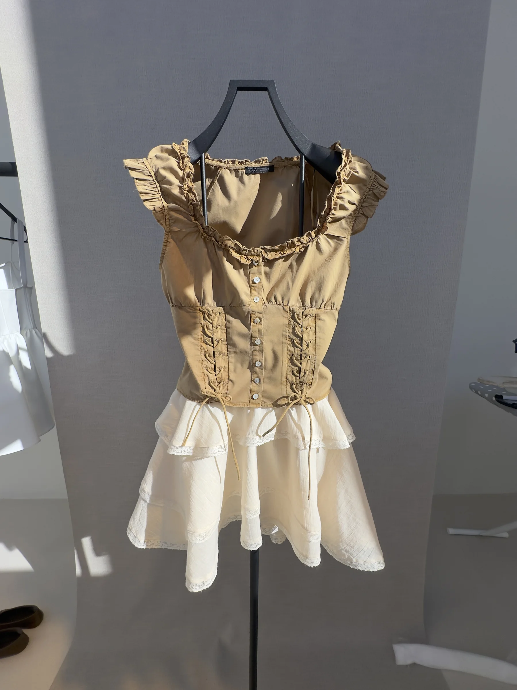
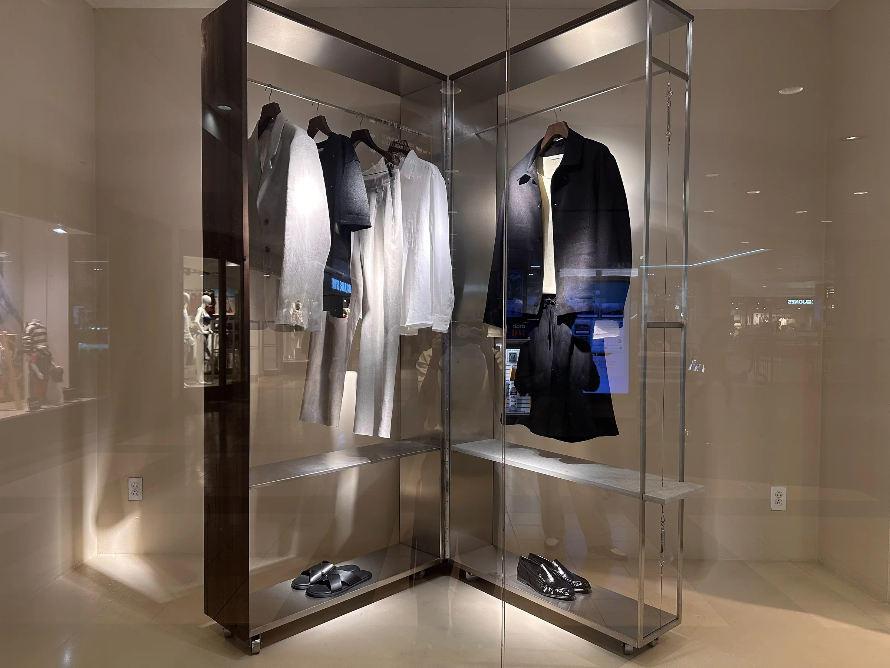
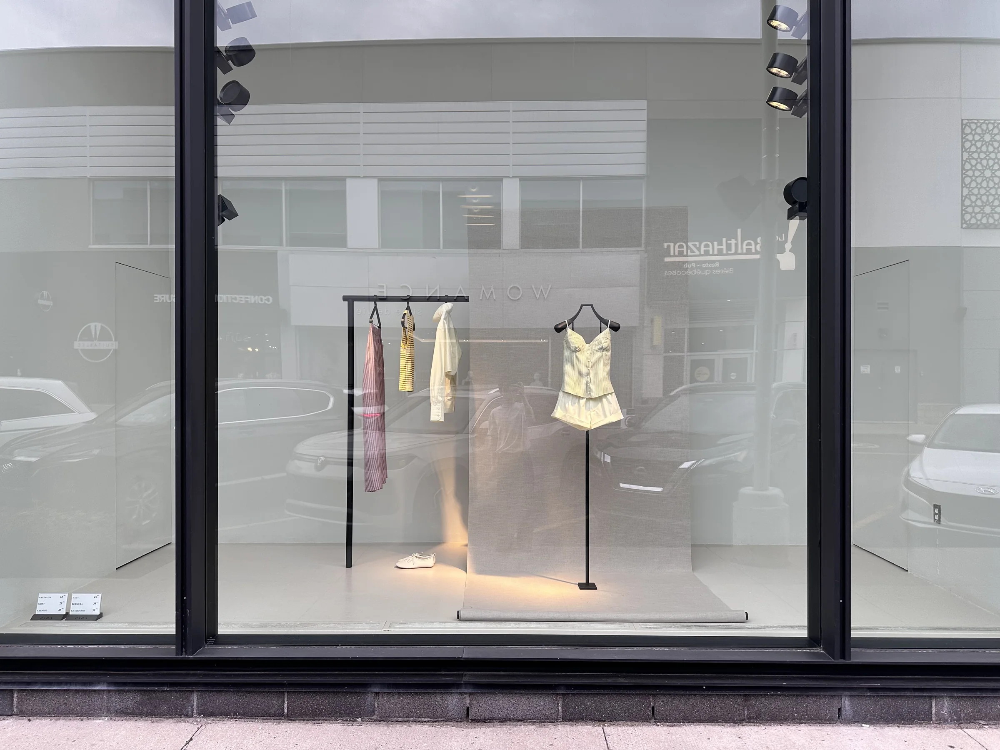
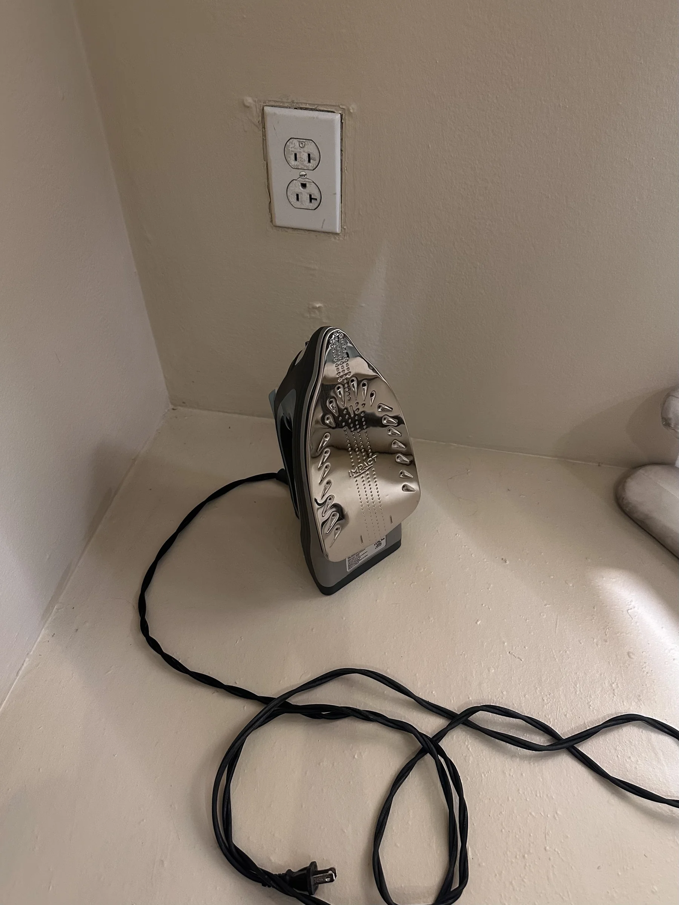
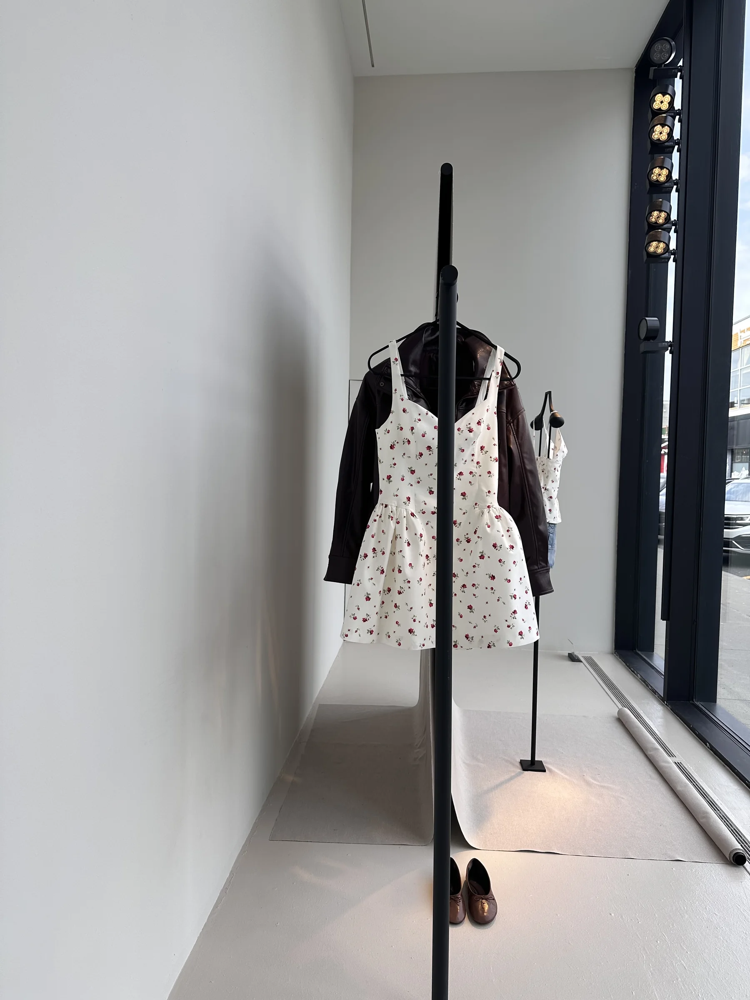
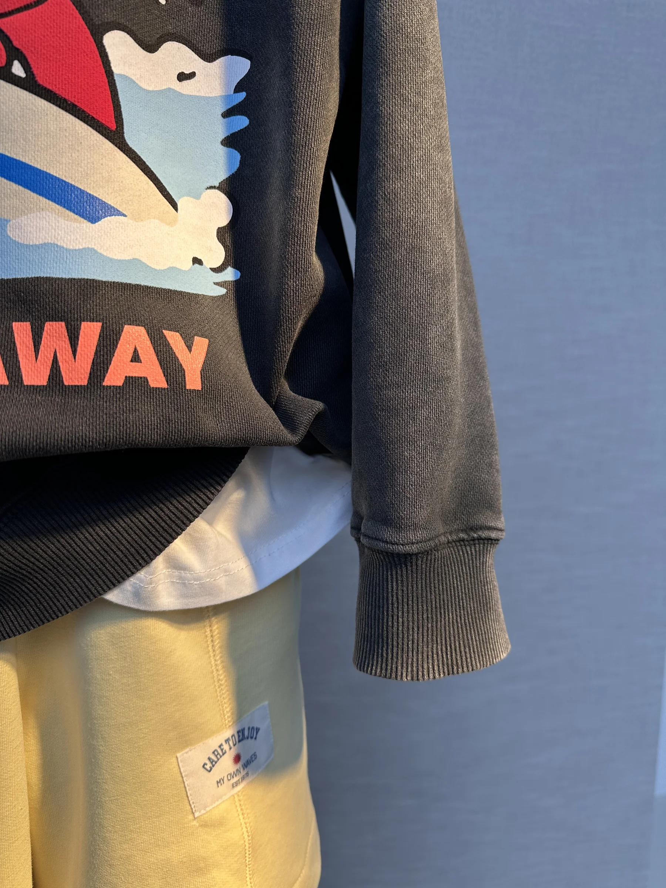
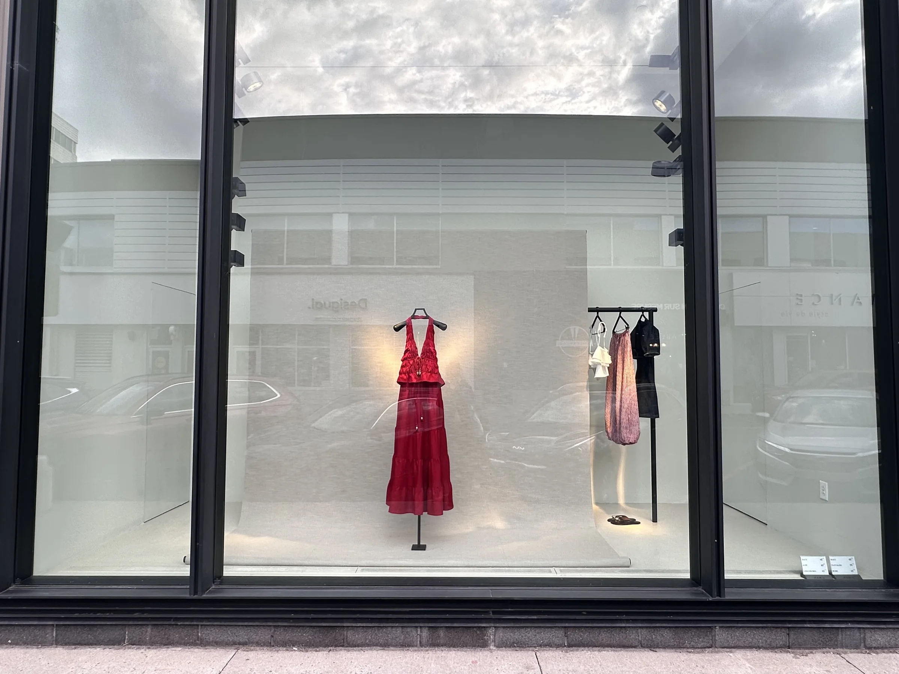
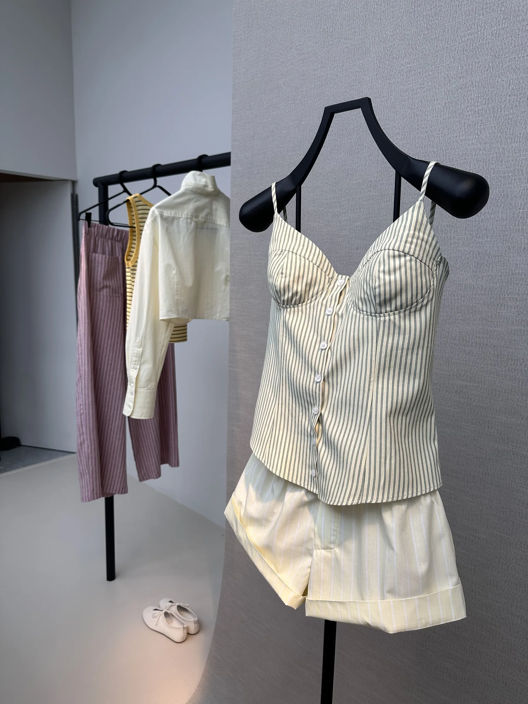
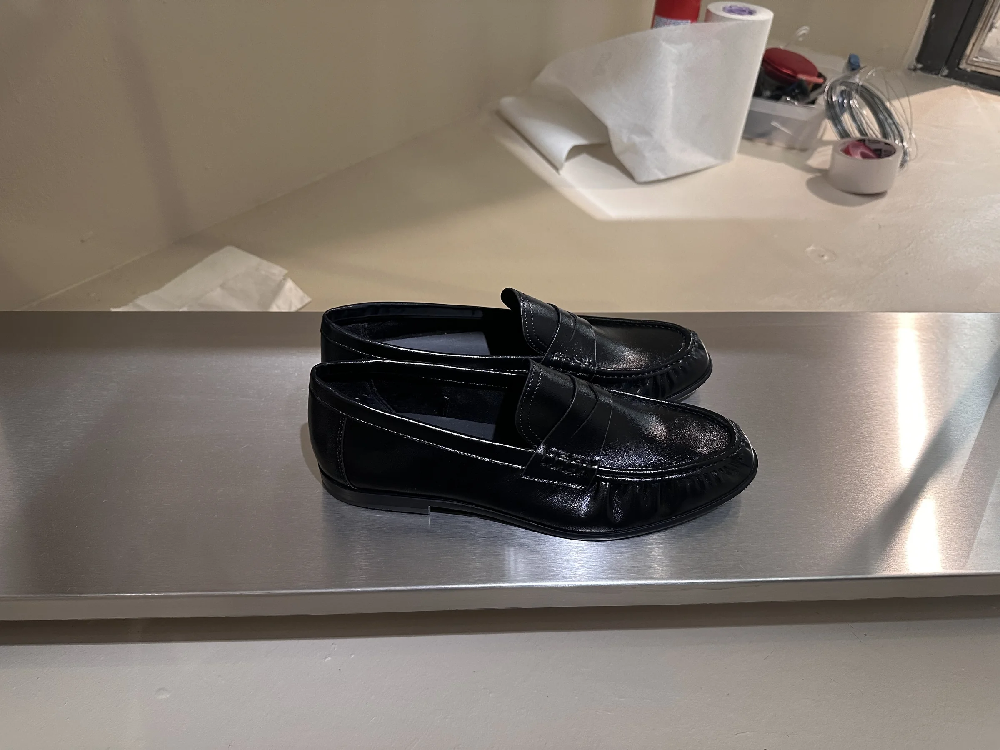
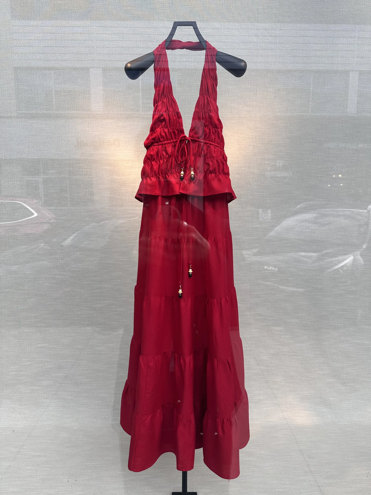

SEBASTIAN HART / JOURNALNO. 02 — 2026
SPATIAL NARRATIVES
Art Direction / Showroom / Experiential Marketing





A space is never only a backdrop. Objects, garments, light and placement work together to create an experience.
ART DIRECTION / SHOWROOM / EXPERIENTIAL MARKETING




SELECTED WORK / 02BACK TO CONTENTS ↗